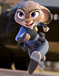
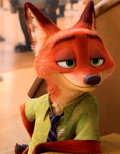
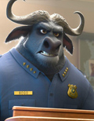

疯狂动物城角色介绍
About Zootopia Character

朱迪·霍普斯（棉尾兔）
乐观外向甚至有点急性子的活泼主义者。通过自己的奋斗成为现代动物都市的第一个兔子警官。警察局的同僚总是瞧不起她，为了证明自己，她从野牛警察局长手中抢到了一个失踪案，凭借过人胆识发现了案件背后的阴谋，然后迫使狐狸尼克与自己踏上了冒险旅程。

尼克·王尔德（赤狐）
一只在动物城里以坑蒙拐骗为生的狐狸，儿时受到歧视与偏见伤害，放弃了自己的理想。被朱迪设下圈套，被迫与她合作查案，而卷入意想不到的阴谋。

牛局长（非洲水牛）
动物城警察局第一分局局长，脾气暴躁难惹的非洲水牛，很关心这所警局。博戈勉为其难地让朱迪加入警察队伍，似乎一直在阻扰朱迪的警官梦。
副市长（绵羊）
市长助理，一只声音很小但是毛很多的甜美绵羊。时时刻刻都对狮市长言听计从，非常配合狮市长的一切工作。